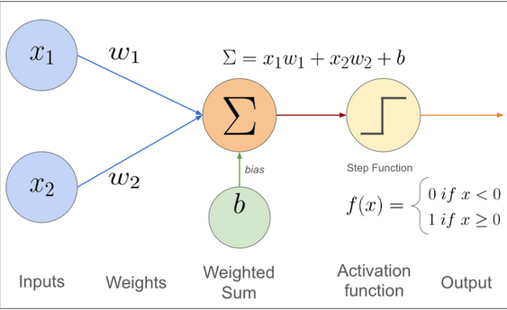
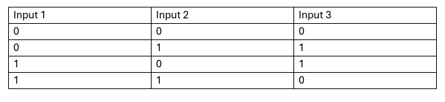
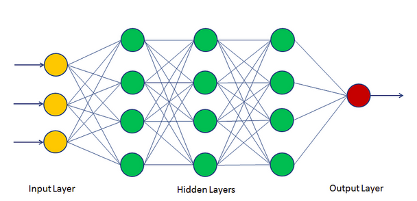
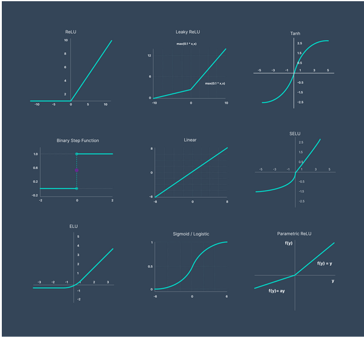
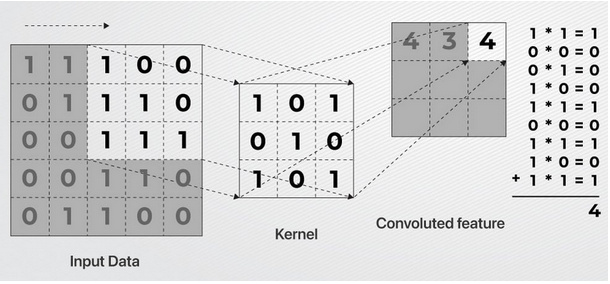
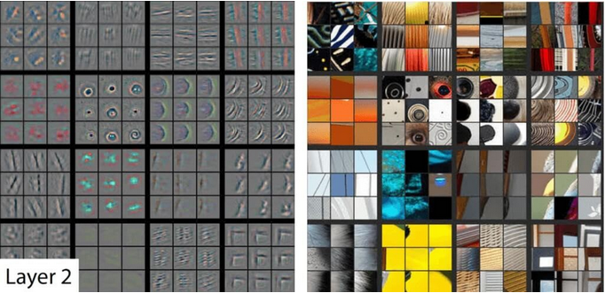

Neural Networks and Deep Learning
Last updated on 2026-04-13 | Edit this page
Estimated time: 50 minutes
Overview
Questions
- What is a neural network in plain language?
- What makes deep learning different from a simple linear model?
- When are CNNs or other deep-learning architectures worth considering?
Objectives
- Explain the basic idea of neurons, layers, weights, and activations.
- Distinguish between a simple multilayer perceptron and architectures designed for structured data such as CNNs.
- Identify when deep learning is a sensible modelling option and when it is not.
Why introduce neural networks here?
By this point in the bootcamp, learners have already seen conventional machine-learning baselines, training, validation, evaluation, and feature engineering.
Neural networks are the next step when the modelling difficulty is no longer only about choosing a classifier or regressor. Sometimes the main difficulty is that the important structure is hard to express with hand-crafted features.
From a weighted sum to a neuron
A neural network starts from a simple idea.
- take the inputs;
- multiply them by weights;
- add them together;
- pass the result through an activation function.
That combination acts like a simple computational unit, often called a neuron.

(cite:https://muneebsa.medium.com/deep-learning-101-lesson-7-perceptron-f6a698d81be8)If you removed the activation function and used only a single layer, the model would behave a lot like a linear model. The activation is what lets the model learn more flexible nonlinear patterns.
Why one perceptron is not enough
A single perceptron can only learn patterns that are linearly separable. If the classes cannot be split by one straight boundary, a single unit will not be enough.
That limitation is the reason neural networks use multiple neurons and multiple layers. Stacking layers lets the model combine simple local decisions into richer nonlinear behaviour.

From one layer to deep learning

(cite:https://machinelearninggeek.com/multi-layer-perceptron-neural-network-using-python/)A neural network is built by stacking many of those units into layers. Each layer transforms the representation a little more.
- the input layer receives the features;
- one or more hidden layers transform them;
- the output layer produces the final prediction.
An MLP with one hidden layer is still best thought of as a neural network. When a network has several learned hidden layers, we usually describe it as deep learning.
The key teaching idea is not the number of layers by itself. It is that the model can build increasingly useful internal representations as data move through the network.
Why activations matter

Activation functions decide how strongly a unit responds to its input. They matter because without them, stacking layers would still behave like a single linear transformation.
In practice, learners do not need to memorise many activation functions. They only need to understand the role:
- introduce nonlinearity;
- help the model represent more complex patterns;
- shape how information passes through the network.
What training changes in a neural network
Training a neural network still follows the same high-level logic as other models:
- make a prediction;
- measure the error with a loss function;
- adjust parameters to reduce that error.
The difference is scale. Neural networks often have many more parameters, so training means adjusting many weights across many layers. This is why they often need more data, more compute, and more care than conventional baselines.
At a high level, backpropagation is the mechanism that sends the error signal backward through the network so those weights can be updated. Learners do not need all the calculus here. The main idea is simple: the model checks which weights contributed to the error and nudges them to reduce it on the next pass.
Common neural-network families
Not all neural networks are the same. Different data structures often call for different architecture families.
| Data type | Common architecture | Why |
|---|---|---|
| Tabular | MLP | Works on fixed-length numeric feature vectors |
| Images | CNN or vision transformer | Preserves spatial structure |
| Text | Sequence model or transformer | Captures order and context |
| Time series | 1D CNN, recurrent model, or transformer | Captures temporal structure |
| Signals / spectra | 1D CNN or feature-based hybrid | Detects local patterns across a sequence |
MLP Use cases
Multi-layer perceptrons offer the flexibility to function as either a regressor or a classifier by simply changing the activation function applied to the output layer (along with the objective function, which we’ll cover later). For instance, if you want your model to perform classification, you would typically use an activation function like SoftMax, which converts the outputs into probabilities that sum to one across all classes. On the other hand, for regression tasks where you want to estimate continuous values, you would usually apply a linear activation function to the output layer.
Code example classification:
PYTHON
import matplotlib.pyplot as plt
import pandas as pd
import numpy as np
from sklearn.neural_network
import MLPClassifier from sklearn.model_selection
import train_test_split
iris_df = pd.read_csv("iris.csv")
iris_df['labels'] = iris_df.variety.astype('category').cat.codes
X, y = iris_df.iloc[:, :4], iris_df['labels']
X_train, X_test, y_train, y_test = train_test_split(X, y, test_size = 0.25, random_state = 0)
print(X_train.shape, y_train.shape)
clf = MLPClassifier(solver='lbfgs', random_state=1, max_iter=300)
clf.fit(X, y) result = clf.predict(X_test)
ground = np.array(y_test)
print(result, ground)
clf.score(X_test, y_test)OUTPUT
[2 1 0 2 0 2 0 1 1 1 2 1 1 1 1 0 1 1 0 0 2 1 0 0 2 0 0 1 1 0 2 1 0 2 2 1
02]
[2 1 0 2 0 2 0 1 1 1 2 1 1 1 1 0 1 1 0 0 2 1 0 0 2 0 0 1 1 0 2 1 0 2 2 1
01]
Out[19]: 0.9736842105263158Code example: regression
PYTHON
import matplotlib.pyplot as plt
import pandas as pd
import numpy as np
from sklearn.neural_network import MLPRegressor
from sklearn.model_selection import train_test_split
iris_df = pd.read_csv("iris.csv")
X, y = iris_df.iloc[:, :3], iris_df["petal.width"]
X_train, X_test, y_train, y_test = train_test_split(X, y, test_size = 0.25, random_state = 0) print(X_train.shape, y_train.shape)
clf = MLPRegressor(solver='lbfgs', random_state=1, max_iter=200)
clf.fit(X, y)
result = clf.predict(X_test)
ground = np.array(y_test)
print(result, ground)
clf.score(X_test, y_test) OUTPUT
(112, 3) (112,) [1.88532522 1.14165756 0.27955749 2.06547563 0.24919028
2.28388127 0.2155882 1.51092191 1.53244915 1.19834217 1.86483485
1.45142482 1.6306123 1.4613069 1.63934615 0.23025832 1.51957326
1.54290422 0.20987057 0.24845432 1.85473185 1.6255684 0.39085837
0.18676907 1.67834109 0.14667113 0.40639156 1.34237052 0.91551074
0.27895251 2.07143315 1.67419905 0.26318909 1.79216822 1.94143883
1.2643635 0.33543957 1.81911754]
/home/corcor27/anaconda3/envs/tensorflow-gpu2/lib/python3.9/site-packages/sklearn/neural_network/\_multilayer_perceptron.py:546:
ConvergenceWarning: lbfgs failed to converge (status=1): STOP: TOTAL NO.
of ITERATIONS REACHED LIMIT.
Increase the number of iterations (max_iter) or scale the data as shown
in: <https://scikit-learn.org/stable/modules/preprocessing.html>
self.n_iter\_ = \_check_optimize_result("lbfgs", opt_res, self.max_iter)
Out[14]: 0.9227530392362144Convolutional neural networks
A convolutional neural network, or CNN, is designed for grid-like data such as images.
Instead of treating every pixel independently, a CNN scans small filters across the input. This lets the model detect local patterns such as edges, textures, and shapes.
Why that matters:
- nearby pixels in an image are related;
- the same useful pattern may appear in different positions;
- local structure should be reused rather than relearned from scratch everywhere.
That is why CNNs became such an important model family for vision.
How a CNN works
The key building block of a CNN is the convolutional layer.
- a small filter, or kernel, slides across the input image;
- at each position, it multiplies the local pixel values and sums the result;
- the output becomes a feature map that highlights a specific pattern.
Different kernels can become sensitive to different structures, such as edges, corners, or textures. As the network gets deeper, those early patterns can be combined into more complex visual concepts.
At the start of training, the kernel values are not meaningful. The model learns them from data by adjusting them during training.
2D convolutions in vision
In image tasks, the kernel is usually a small \(N \times N\) window that moves across the image.

Each pass of that kernel produces a feature map. This is what lets the network detect useful local visual structure without treating every pixel location as a completely separate problem.

For teaching purposes, the important point is not the exact arithmetic. It is that CNNs learn reusable local detectors and then stack them into more abstract visual features.
1D convolutions for sequences and signals

Convolutions are not only for images. A 1D convolution slides across a sequence rather than across a 2D image.
This is useful for:
- time series;
- sensor data;
- spectra;
- some kinds of biological sequence data.
The intuition is the same: the model learns short local patterns and reuses them across the sequence.
This is why 1D convolutions can be useful for time series, spectra, and sensor signals. They are often a better match than flattening the whole sequence into one long feature vector and ignoring local structure.
Bridge to the next page
Understanding neural-network families is only part of the decision. The next question is whether deep learning is actually justified for your problem, and whether a pre-trained representation would be a more realistic route than training from scratch.
That is the topic of the next lesson: feature learning and transfer learning.
Key points
A neural network is built from weighted transformations and activation functions arranged in layers.
Deep learning means learning increasingly useful internal representations across multiple layers.
Different data types suggest different architecture families.
CNNs are especially useful when local spatial or sequential patterns matter.
Deep learning should be justified by the structure of the data and the limits of simpler models.
Does PCA count as representation learning?
In what sense is it similar to learned embeddings?
In what sense is it different from neural-network-based representation learning?